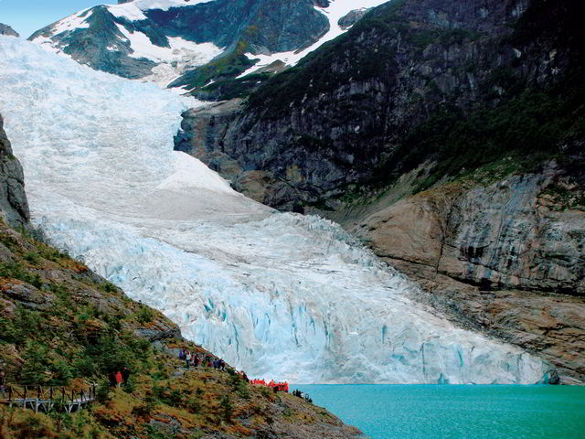
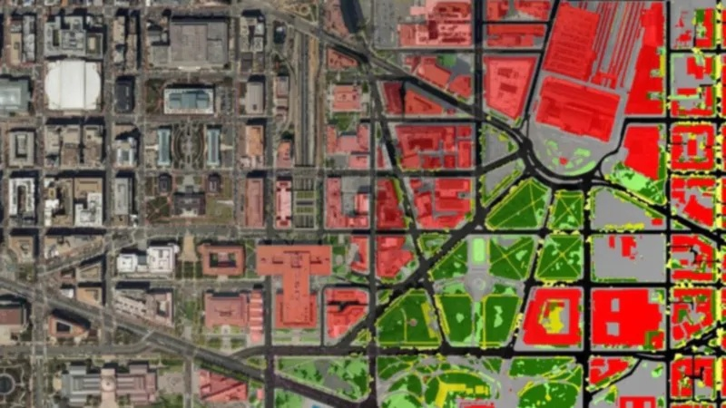
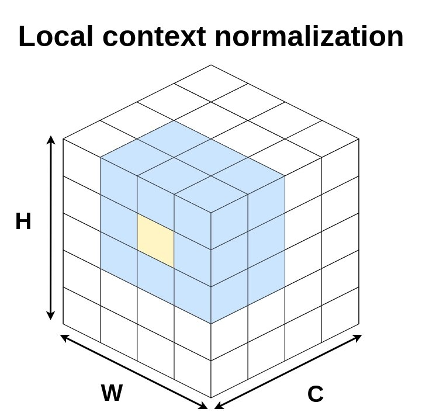
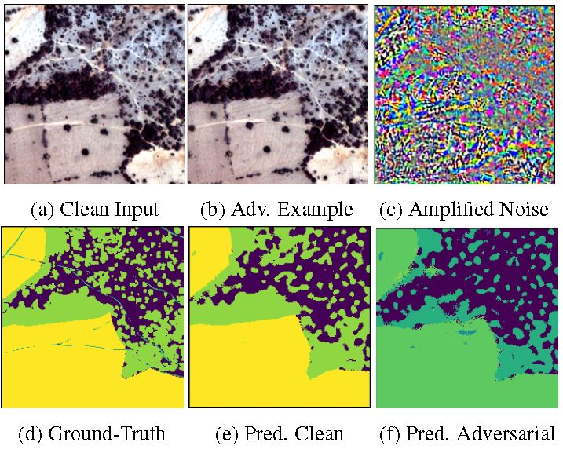

Research
Selected research themes and projects. Most are joint work with collaborators across Microsoft and academic partners.

Geospatial Foundation Models & Earth Observation
Scaling self-supervised and foundation models for satellite imagery to power downstream tasks like land cover, change detection, and species monitoring.

AI for Renewable Energy Mapping
Detecting and tracking utility-scale solar installations from satellite imagery to inform energy policy and sustainability planning.

Wildlife & Conservation from Space
Detecting cattle, elk, and beached whales from very-high-resolution satellite imagery to support conservation and biodiversity monitoring.

Trustworthy Medical Imaging
Federated generative modeling, robust diagnosis from chest CT/X-ray, and segmentation of cancer metastases in PSMA PET/CT.

AI for Humanitarian Action
Mapping vulnerable communities and supporting humanitarian partners — from refugee family reunification to flood and pandemic response.

Human-in-the-loop Land Cover Mapping
Interactive systems where humans and models collaborate to produce robust analyses across geographically diverse imagery.

Local Context Normalization & Conditional Computation
Architectural innovations that improve generalization and efficiency in dense prediction tasks.

Robustness & Adversarial ML
Understanding and defending deep models in remote sensing and beyond the visible spectrum.